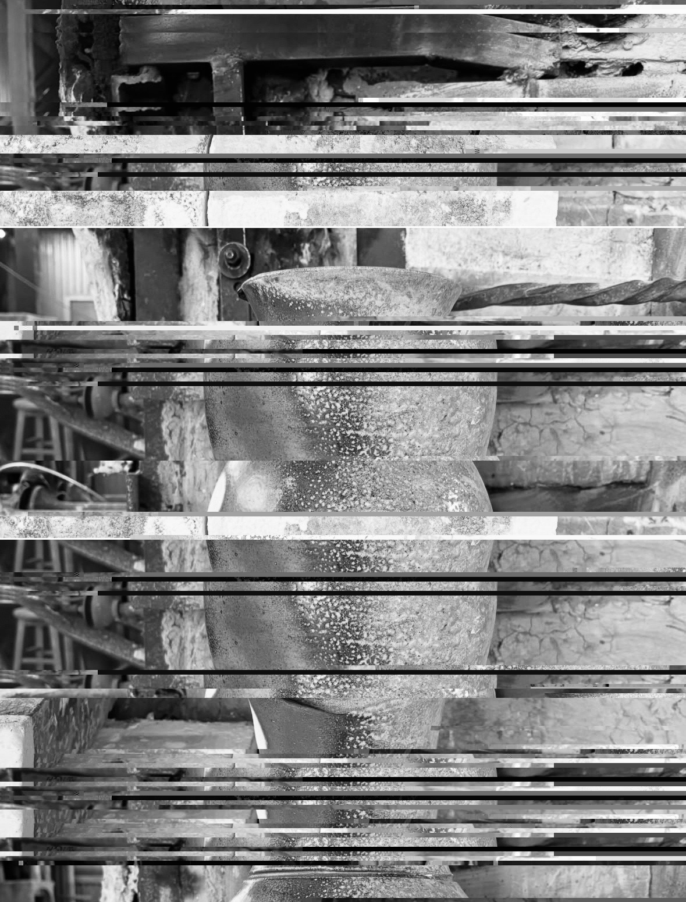
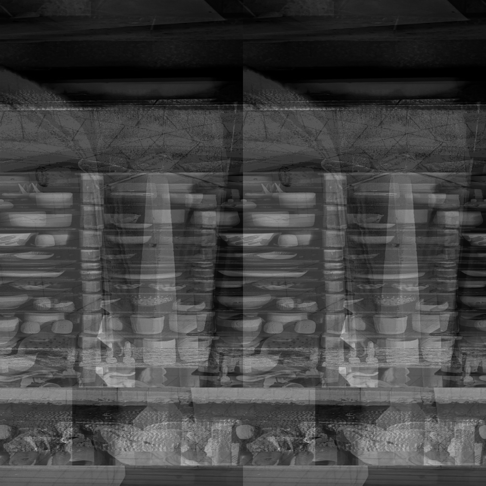
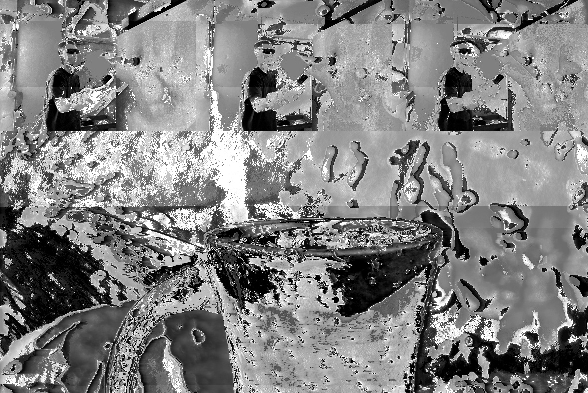

Kyle Jordan
Glitch Art
In this series of photos, I depicted a glitched out behind the scenes process of firing ceramics. In these three artworks, I abstracted the firing process of a gas kiln using audacity, the kiln loading process using audacity, and the finished product of a vase that endured wood and soda ash on the surface using data-bending through text editor. Ceramics relies on control and chaos both coming from the maker and the chemical reactions occurring in the atmosphere of a gas or wood kiln. The glitch effects added to the original images create a layer of distortion and it hints at the unexpected nature of the controlled chaos in the ceramic firing process.
Go Home identity3d
netart


